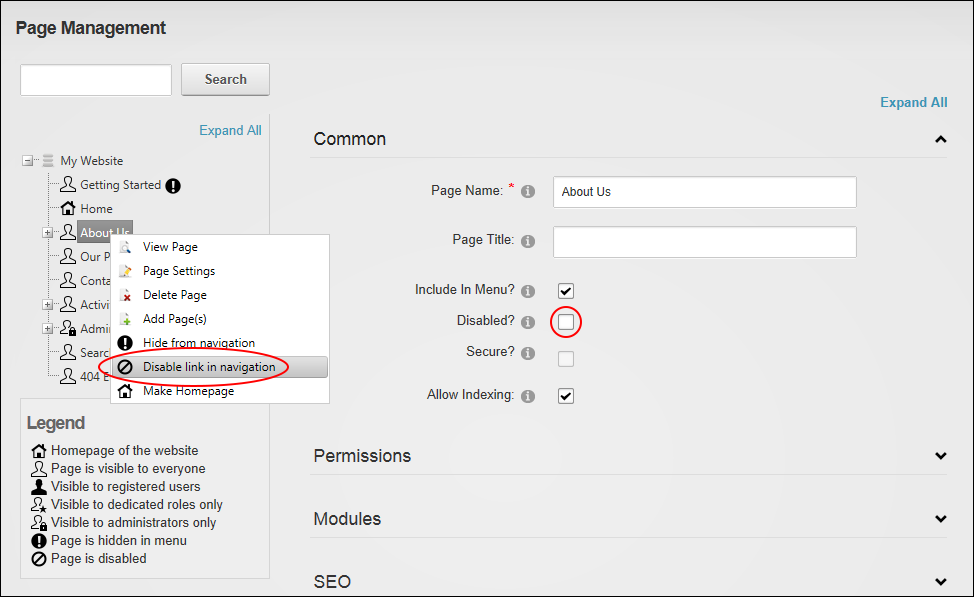

Enabling/Disabling Page Link (Pages Module)
How to prevent or allow a page to functioning as a link in the site menu using the Pages module. Pages with linking disabled are still visible in the menu; however no action is taken when a user clicks on the page in the menu. An example of when you might disable a link is when you have a parent page that doesn't have any content, but still allows users to navigate to its children. DNN Platform users must be granted Edit Page permissions to the page where the Pages module and Edit Page permissions to the page that is being edited. Evoq Content users must be granted Add Content permissions to the page where the Pages module is located as well as Manage Settings permissions to the page being edite.
- Navigate to Admin >
 Page Management - OR - Go to a Pages modules.
Page Management - OR - Go to a Pages modules.
- Select from these methods:
- In the left-hand navigation tree, right-click on the required page and then select either
 Disable Link In Navigation or Enable Link In Navigation as required.
Disable Link In Navigation or Enable Link In Navigation as required. - Select the required page.
- Expand the Common section to the right.
- At Disabled? to disable link - OR - to enable link
- Click the Update Page button.
